Leaflet TimeDimension Examples
Add time dimension capabilities on a Leaflet map
- 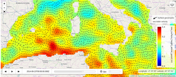 Daily altimetry from satellite
- 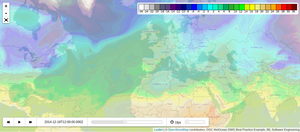 Temperature forecast from IBL Software Engineering
- 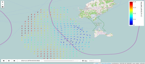 SOCIB HF Radar
- 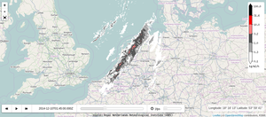 Radar precipitation measurements above the Netherlands (from KNMI)
- 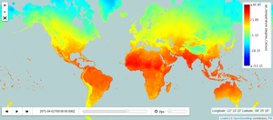 Climate projection from Postdam Institute for Climate Impact Research
- 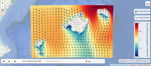 SOCIB Wave Forecast (SAPO IB).
- 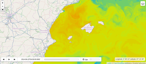 SOCIB WMOP - Ocean Forecast
- 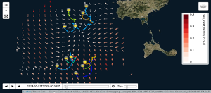 SOCIB HF Radar with surface drifters trajectories
- 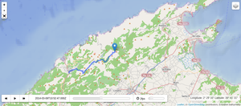 GXP and KML tracks
- 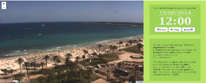 ImageOverlay and custom control
- 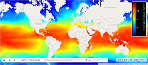 Sea Surface Temperature from NOAA Operational Climate Data Records
- 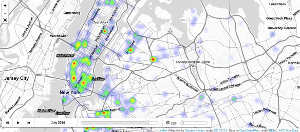 Noise-Commercial complaints from NYC OpenData
- 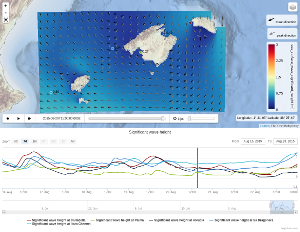 TimeSeries in a point (demo of L.TimeDimension.WMS.timeseries Layer)
 NOAA's nowCOAST weather radar
NOAA's nowCOAST weather radar Oil spill simulation
Oil spill simulation- 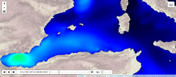 Portus wave forecast (TileLayers)